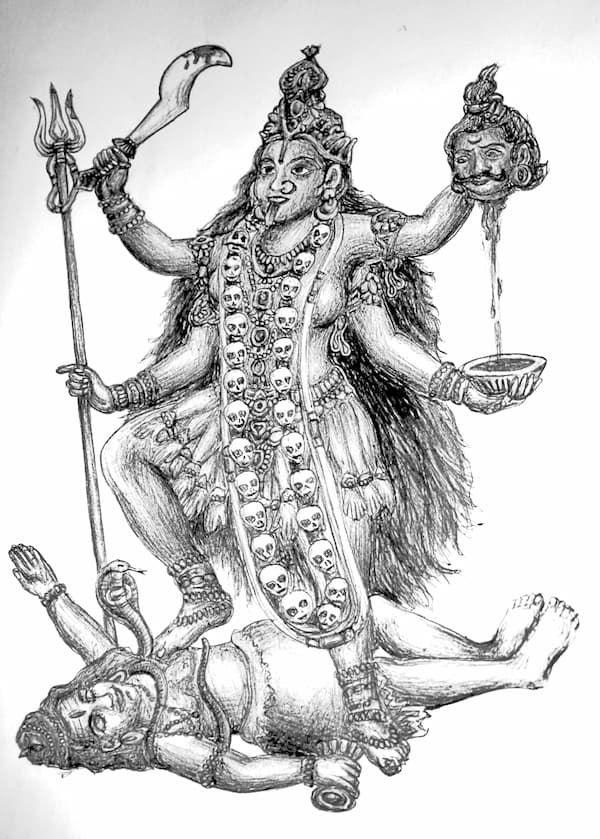

Întâlnirea noastră are loc întrucât simt nevoia să dau mărturie despre felul în care Hristos vrea să îi cheme la el pe cei care au fost înșelați de diferite religii sau practici spirituale neortodoxe. Tema – De la zeița morții la Împăratul Vieții – se datorează faptului că am fost un închinător al lui Kali, Zeița morții, și am ajuns să cred în Hristos, Fiul lui Dumnezeu, așa cum Îl mărturisește Biserica Ortodoxă.
Spun încă de la început că faptele pe care le voi relata vor părea unora drept neverosimile. Îi înțeleg pe sceptici și nu caut să îi conving. Cuvintele mele li se vor părea acestora ca o poveste, ca un science-fiction ortodox. Cred însă că se vor găsi și suflete care să înțeleagă că tot ceea ce vă voi spune au fost întâmplări pe care le-am trăit. Acum, la mai mult de cincisprezece ani de la convertirea mea la Ortodoxie, mi se pare că m-am născut și am crescut doar în Biserică. Îmi e din ce în ce mai greu să îmi amintesc de practicile yoga și de puterile paranormale pe care le-am avut înainte, ca și de desfrâul sexual tantric în care am trăit…
Sunt ani de zile de când scriu și vorbesc împotriva practicilor yoga, a ocultismului și a celorlalte ramificații ale Mișcării New Age. De ce o fac? Pentru că știu că în brațele acestor rătăciri sunt milioane și zeci de milioane de suflete care au nevoie de adevărul lui Hristos. Pentru că știu cât de greu este să mergi pe un drum spiritual la capătul căruia, în locul lui Dumnezeu, te așteaptă diavolul.
E o lipsă de smerenie să vorbești despre faptele tale, știu. Numai că eu nu vă voi vorbi acum despre faptele mele bune, vă voi vorbi despre faptele mele rele și despre modul în care Hristos a venit în viața mea și m-a adus la lumina adevărului…
M-am născut în anul 1974, pe 15 august, de Adormirea Maicii Domnului. În copilărie am crescut departe de Biserică. Deși fusesem botezat de mic, ca majoritatea copiilor din România, pe vremea regimului comunist mulți oameni, chiar dintre cei care credeau în Dumnezeu, nu mergeau la biserică și nici nu le ofereau copiilor o educație religioasă.
Îmi aduc aminte cum, mic fiind, intrând într-o biserică catolică, am văzut pe pereți imagini din pătimirea lui Hristos. Noaptea am visat cum Îl duceau pe Hristos spre Golgota și cum El a căzut sub povara crucii. Și, în vis, eu am vrut să ridic crucea Lui… Visul m-a marcat, dar nu a însemnat o angajare pe calea creștină. Mă atrăgea în mod deosebit un crucifix despre care mi se spunea că fusese adus de străbunicii mei din Grecia și că era de la Muntele Athos. Văzându-L pe Hristos răstignit, mă impresiona suferința Lui, dar nu mă gândeam să duc o viață creștină.
Încă de la treisprezece ani, la insistențele tatălui meu, am început viața sexuală. Tata îmi tot repeta că nu sunt vrednic de numele lui dacă stau cuminte. Așa că nu am stat… Îmi amintesc și acum cum stăteam ore întregi, zi de zi, să conving o fată să se culce cu mine. Acum douăzeci de ani copiii duceau o viață mult mai curată decât cei de azi și era mult mai greu să convingi pe cineva să păcătuiască.
Chiar înainte să împlinesc paisprezece ani mama mea s-a sinucis, aruncându-se de la etaj. A căzut la mai puțin de doi metri de sora mea – care avea unsprezece ani – care a suferit un șoc puternic. Moartea mamei m-a făcut să caut răspuns la întrebarea: „Ce se întâmplă cu omul după moarte?” Încercasem să practic yoga și înainte de acest trist eveniment, dar după el m-am apucat cu mai multă seriozitate. Tata îmi aducea acasă cărți de yoga și de filosofie orientală. Am încercat să îmi opresc bătăile inimii, dar nu am reușit. Am încercat să fac călătorii astrale, să ies din trup, dar fără mari rezultate. Inventasem o nouă metodă de spiritism, fără să îmi dau seama că, în loc să vorbesc cu mama sau cu alte spirite, vorbeam cu dracii. Dar singur nu mă descurcam: aveam nevoie de un guru.
Momentul care mi-a îndreptat toată atenția spre căutările spirituale a fost următorul: am fost în vizită la o fată, mult mai mare decât mine, care avea capacități paranormale. Multă vreme ghicise în cărți cu o precizie extraordinară. Și asta până când a început să viseze biserici dărâmate și să audă o voce care o întreba: „Dumnezeu sau diavolul?” Dar nici când se lăsase de ghicit nu pornise pe drumul Bisericii.
Vorbind cu această fată, la un moment dat am spus o minciună neimportantă. Dar, în acea clipă, am simțit cum o putere fizică iese din ea și mă împinge… Îmi venea să sar de la etaj, pentru a scăpa de presiunea aceea nevăzută. Fata a plecat în altă cameră și m-am liniștit. Când s-a întors, i-am spus că o mințisem și mi-a explicat că din cauza minciunii mi se întâmplase totul. I-am zis că vreau să devin și eu puternic cum e ea și atunci mi-a sugerat să mă apuc de yoga. M-a trimis la cursurile lui Gregorian Bivolaru, cel mai renumit și mai controversat guru din România zilelor noastre…
În 2004, acesta a fost pus de autoritățile române sub urmărire generală, fiind acuzat de „trafic de persoane și infracțiuni asociate crimei organizate”. În 2005 a părăsit ilegal țara și a cerut azil politic în Suedia, unde Curtea Supremă din Stockholm a considerat că gurul e prigonit exclusiv din motive religioase și a refuzat să îl extrădeze. Acum, după ce l-am cunoscut și după ce am cunoscut și modul în care subjuga sufletele, îl asemăn lui Jim Jones, care și-a pus câteva sute de discipoli să se sinucidă în Guyana, în anul 1978. Bivolaru nu a pus pe nimeni să se sinucidă, cel puțin nu până acum. Eu m-aș fi sinucis, dacă gurul mi-ar fi cerut asta, și aș fi făcut-o fără să stau pe gânduri, fiind convins că sinuciderea ar fi spre folosul meu spiritual.
În anul 1990, când m-am apucat de yoga cu Bivolaru, trecuse mai puțin de un an de când regimul dictatorial al lui Ceaușescu căzuse și românii obținuseră libertatea religioasă. Ceaușescu prigonise puternic Biserica și toate grupările spirituale. De aceea, cei care fuseseră închiși pe vremea dictatorului se bucurau de o faimă deosebită. Gregorian Bivolaru fusese închis în anul 1977, fiind acuzat de răspândirea de materiale pornografice. Dar discipolii lui susțineau că de fapt cauza era promovarea practicilor yoga, iar acuzațiile de pornografie ar fi fost doar un pretext. Apărarea era plauzibilă, câtă vreme mulți preoți fuseseră închiși de regimul comunist sub acuzația unor pretinse apartenențe la o grupare învinuită de orientare nazistă…
La începutul clasei a zecea am început cursurile de yoga… Primeam orice ni se spunea ca fiind Adevărul… Credeam că Bivolaru e un mare spirit, poate chiar noul Mesia. Ni se spunea că, așa cum Hristos a fost maestrul Erei spirituale a Peștilor, așa Era Vărsătorului, Noua Eră, avea un Mesia care trebuia să vină pentru a duce lumea pe culmile sfințeniei…
Au circulat în România anumite profeții sectante în care scria că Bucureștiul va fi Noul Ierusalim, iar România centrul spiritual al planetei. Credeam aceasta, gândindu-mă la cât de importante sunt tehnicile de meditație pe care le promova Bivolaru. Credeam că el cunoaște cea mai scurtă cale spre eliberare, spre ieșirea din ciclul reîncarnărilor. Bivolaru propovăduia credința în reîncarnare, ca toți maeștrii New Age. Și spunea că Tantra Yoga e cea mai eficientă cale de desăvârșire. Ce e Tantra Yoga? E Yoga sexuală… Prin concentrare, yoghinii afirmă că transmută energiile sexuale în energii spirituale. Și, făcând sex, nu o fac pentru plăceri de moment – în Tantra Yoga orgasmul e considerat doar o pierdere de energie, iar actul sexual fără orgasm e un mijloc de sporire spirituală.
Elev fiind, mă bucura faptul că la cursurile de yoga veneau foarte mulți studenți și intelectuali. Pentru mine era o dovadă în plus că mă aflu pe drumul cel bun. Acum, după atâția ani, spun că unii veneau acolo doar pentru sex… E mai simplu să te apuci de yoga și să ai câte partenere vrei, decât să dai banii la bordeluri. Totuși, pe vremea aceea nu vedeam lucrurile așa…
Bivolaru era considerat Marele Maestru… De exemplu, ne-a învățat o tehnică pe care, dacă o practicam vreme de patru luni, puteam zbura prin aer… Deși nu căutam puterile paranormale, nu era de mirare că unii le dobândeau. Un tânăr ajunsese să zboare de la sol, unde stătea în poziție de meditație, până aproape de tavan și putea pune obiecte pe dulap.
Alții dobândiseră alte puteri paranormale, „sidhis-uri”… După o serie de exerciții yoghine, am simțit cum mă făcusem mare cât camera… Adică pereții îmi apăsau câmpul energetic. Nu aveam de unde să știu că totul era doar senzație indusă de diavol…
Foarte rar am avut totuși senzația prezenței diavolului… La ședințele de meditație, ni se punea o muzică ambientală, foarte plăcută. La un moment dat, ni s-a pus o muzică efectiv hidoasă, parcă venită din iad… O muzică pe lângă care rock-ul pare bebeluș… M-a șocat, pe moment, dar am considerat că nu eram eu destul de avansat pentru a ști să mă folosesc de ea… Altă dată, am făcut o meditație în fața oglinzii. La lumina lumânării, vroiam să îmi văd aura… Mă pregăteam pentru o meditație pe care vroiam să o fac în cimitirul evreiesc care era aproape de mine… Dar nu a mai fost nevoie să ajung în cimitir. Meditând, am simțit brusc o prezență demonică lângă mine. Chiar dacă nu am văzut-o, am simțit-o clar de tot și m-am speriat.
Oricum, cel mai intens contact cu diavolul l-am avut în urma inițierii mele în Tantra Yoga. Chiar dacă atunci am crezut că am avut o revelație, un moment de contact cu Absolutul, devenind creștin am înțeles că revelația mea fusese de origine demonică. Iată cum a fost…
Stăteam cu o fată pe plajă, între yoghini. Stând pe nisip în poziție de meditație, față în față, ne-am atins doar palmele și vârfurile genunchilor… Și în clipa aceea am uitat, pur și simplu, că sunt om. Simțeam Universul ca pe o ființă care are șapte centri de forță și simțeam cum cei șapte centri de forță ai mei erau conectați la energia universului. Nu mi-am dat seama cât a durat starea de extaz, dar când mi-am revenit m-am gândit: „ce rost are să merg eu pe calea posturilor aspre când, practicând Tantra Yoga, avansez mult mai ușor?” Așa că m-am decis să practic Tantra Yoga…
Deși mă apucasem de yoga și ca să scap de murdăria sufletească pe care mi-o lăsaseră în suflet păcatele sexuale, am reînceput să fac sex… Numai că de data aceasta eram convins că ceea ce fac era bine. În fiecare seară spuneam de trei ori Tatăl nostru, rugându-L pe Dumnezeu să mă ierte pentru tot ce greșisem și să îmi dea putere să fac numai binele. Și nici nu îmi trecea prin cap că prin sex păcătuiam. Credeam că, dacă am renunțat să am orgasm, totul e curat… Și eram atât de convins că Tantra Yoga e bună, încât vroiam ca maestrul să se culce și cu sora mea, care era fecioară și avea cam 15 ani. Într-o perioadă, maestrul se culca în fiecare săptămână și cu prietena mea. Ea îmi povestea că uneori erau și alte fete care stăteau la coadă în fața camerei maestrului, pentru a aștepta partida de Tantra Yoga…
Nu vreau să se înțeleagă că yoga devenise pentru mine un mijloc de distracție… Țineam posturi foarte aspre și vroiam să renunț definitiv la mâncare. Adică să trăiesc fără să mai mănânc deloc, nimic…
Am început prin a nu mânca nimic o zi, două, trei… Am reușit să țin o săptămână post, doar cu apă… Și aveam mai puțin de optsprezece ani, organismul meu era în creștere. Greu mi-a fost când am ținut apoi un post total, am stat o săptămână fără apă sau hrană de orice fel. M-am hrănit doar cu aer și cu energie de la diavol… În Săptămâna Patimilor, în anul 1992. Și m-am întrebat, la începutul postului, la cine să cer ajutorul dacă voi simți că nu mai rezist, lui Bivolaru sau lui Hristos? Și am zis că Îi voi cere ajutorul lui Hristos, iar dacă Hristos nu mă va ajuta, voi apela la puterea gurului Bivolaru.
Aveam mare încredere în puterile gurului. Ni se vorbise de o formă specială de yoga, Guru Yoga, în care discipolul face o ascultare oarbă de maestrul lui. Și ni se spusese o poveste, pe care o crezusem adevărată, cu un om care s-a aruncat în prăpastie pentru că un maestru nu a vrut să îl primească ucenic. Maestrul i-a pus mâinile și picioarele la loc și apoi l-a înviat… Astfel de povești mă făceau să am încredere totală în maestrul meu. Am avut chiar o viziune demonică, în care am văzut universul plin milioane de celule și în fiecare din ele maestrul meu stătea în postura de lotus. Eu inspiram aceste celule, iar când le expiram, maestrul rămânea în mine…
O prietenă de-a mea, pe care o adusesem să vadă o conferință a lui Bivolaru, mi-a spus uimită cum a văzut raze de lumină care ieșeau din el…
Având eu atât de mare încredere în puterea lui, mă gândesc și acum că numai Dumnezeu mi-a pus în minte să aleg să țin postul acela aspru cu ajutorul lui Hristos…
În acea săptămână de post total am citit pentru prima oară din Filocalii. Nu îmi dădeam seama că meditațiile cu Shiva sau cu Milarepa pe care le făceam nu aveau nimic în comun cu spiritualitatea filocalică… Am avut un moment de slăbiciune când am simțit că înnebunesc din cauza postului, dar I-am cerut ajutorul lui Hristos și momentul critic a fost depășit. Yoghin fiind, nu mă lepădasem conștient de Hristos. Mai mult, maestrul ne punea să facem meditații în fiecare săptămână cu conștiința christică… Eu, stând în fața crucifixului, mă rugam: „Doamne, am primit în copilărie botezul cu apă, și nu mi-a ajutat la nimic. Botează-mă Tu cu foc…” Și credeam că Hristos mă va ajuta să sporesc pe calea yoghină…
În Vinerea Patimilor am prins răsăritul soarelui într-un parc, meditând în fața unui crucifix mare de piatră… Chiar dacă în noaptea de Paști nu m-am dus la biserică, preferând să meditez acasă, legătura mea cu Hristos a devenit mult mai puternică după acel post.

Dar această legătură nu mă rupea de zeitățile hinduse. Îmi plăcea să meditez cu Kali, una din puterile cosmice, zeița națională a Tibetului, care este reprezentată cu un șir de cranii la gât, cu un cuțit în mână, cu un cap de om în cealaltă și cu limba plină de sânge. Despre ea se spune că este înfricoșătoare pentru cei care nu o cunosc, dar este apropiată de cei care o cinstesc. Mă rugam ei: „O, Kali, fă-mă al tău. Fă dragoste cu mine. Intră în mine și primește-mă în tine. Vreau să fiu una cu tine. Dă-mi puterea de a birui moartea, dă-mi puterea de a stăpâni timpul. Fă-mă al tău“. Am simțit-o pe Kali ca pe o femeie uriașă, cu puteri copleșitoare. Mă simțeam legat de Kali, dar mă simțeam legat, în același timp, și de Hristos.
De aceea, am fost surprins când, după o ședință de yoga, întrebându-l pe Bivolaru ce legătură există între Hristos și puterile cosmice – i se puneau maestrului întrebări pe bilețele – el a răspuns: „Ce legătură? Nu există nici o legătură…” Dacă mi-ar fi spus că Hristos e o conștiință mare care are grijă de planeta noastră, în timp ce Kali e una din ființele care mențin universul în existență, și că Hristos e mic pe lângă Kali, dar că se cunosc între ei, aș fi crezut. Dar să mi se spună că nu există nici o legătură, ca și cum ar exista două adevăruri paralele, fără nici o legătură între ele, nu puteam să accept. A fost prima oară când am pus serios la îndoială înțelepciunea maestrului meu. Tot atunci l-am întrebat care cale yoghină este mai înaltă, cea a ascezei duse la limită sau a tantricilor, care trăiesc o viață sexuală foarte activă. Și, înainte ca el să răspundă că fiecare să meargă pe calea care i se potrivește, primul răspuns a fost un hohot de râs al multora din sală, care ironizau până și ideea de asceză sexuală… Râsul lor, ca și răspunsul maestrului, m-a făcut să vreau să găsesc adevărul în altă parte…
O auzisem cu puțin timp înainte pe Swami Shivamurti, o maestră inițiată în India, discipola lui Swami Satyananda. Swami Shivamurti a fost trimisă încă din anii 1978 în Kalamata pentru a aduce Greciei învățătura yoghină. În 1984 a fost înființat „ashramul”, mănăstirea yoghină, de lângă Atena, de la Paiania. M-am întâlnit cu ea într-o casă particulară, unde stabilise o întâlnire cu un număr restrâns de yoghini. Am întrebat-o dacă în ashramul ei pot merge pe calea ascezei, și mi-a răspuns afirmativ, plină de bunăvoință. Deși mi-aș fi dorit ca ea să fie bărbat și să arate ca maestrul standard, bătrân, cu barbă albă și lungă, plin de pace, am acceptat să îi fiu discipol. Am plecat după ea în Bulgaria, unde fusese invitată să mai țină niște conferințe.
La un moment dat, mi-a dat numele yoghin, un fel de nume de botez indian. Deși mă așteptam să primesc un nume mare – cum ar fi Mahashiva sau Milarepa, am primit un nume aparent banal: Bhaktimurti, forma devoțiunii, forma evlaviei. Altfel spus, pentru mine cea mai scurtă cale de iluminare era adorarea cuiva, a unui zeu, a unei puteri… Așa că m-am gândit să Îl cinstesc pe Hristos. Cred că Dumnezeu i-a pus în gând lui Swami Shivamurti să îmi dea acest nume, chiar dacă ea slujește puterile întunericului. Dar Dumnezeu a putut vorbi prin ea, ca prin măgarul lui Balaam. Și nu cred că ea și-a dat seama ce bine mi-a făcut…
Luasem hotărârea să merg în ashramul ei, ea mi-a spus că mă primește, dar – întrucât eram minor – aveam nevoie de aprobarea scrisă a tatălui meu. În Bulgaria a fost un moment de mare importanță pentru viitorul meu… Am fost dus de o yoghină la câteva biserici mai importante din Sofia, una din ele fiind cea rusească. Acolo, la subsol, se află moaștele episcopului Serafim Sobolev, un ierarh făcător de minuni. Lângă racla sa erau foarte multe bilețele, pe care oamenii îi scriau cuviosului episcop dorințele lor. La racla lui m-am rugat din toată inima și i-am cerut: „Ajută-mă ca în viață să nu fac voia mea, ci să se facă voia lui Dumnezeu cu mine…” Am simțit că ceva s-a schimbat atunci, ceva greu de explicat în cuvinte. Pe vremea când făceam yoga mi se făcea foarte rău când intram în biserici, mi se părea că nu e aer deloc, nu puteam suporta decât foarte greu slujbele… Dar în biserica unde sunt moaștele Vlădicăi Serafim Sobolev – care, deși nu e canonizat, e cinstit ca sfânt de popor – parcă s-a luat o ceață de pe sufletul meu.
M-am întors în țară, plin de emoția plecării în Grecia. Tata mi-a dat aprobarea să plec, pentru că știa că oricum nu aveam de gând să termin liceul. Se ruga diriginta de mine să vin la școală, să mă vadă profesorii ca să mă treacă în următoarea clasă, dar pe mine nu mă interesa decât cum să practic yoga cât mai intens. De altfel, la școală, în timpul orelor, tot yoga făceam. Mi se părea o pierdere de timp să învăț.
Deși eram la Liceul de informatică – cel mai bun liceu din București pe vremea aceea, la care dădusem fiind pasionat de informatică, practica yoga mă subjugase total, și nu mai aveam stare să învăț nimic în afară de asane și de tehnici de meditație. De altfel, mintea îmi fusese spălată în așa fel încât nu puteam citi decât materiale yoghine, la celelalte mintea nu mi se aduna…
Plecarea mea în Grecia se apropia. Mă hotărâsem ca, înainte de a ajunge în ashramul de lângă Atena, să trec și prin Sfântul Munte Athos, unde auzisem de cuvioșii care practică rugăciunea lui Iisus. Vroiam să fiu și eu inițiat în această practică… Tatăl meu mi-a sugerat să mergem să vorbim despre plecarea mea în Grecia cu un cunoscut părinte din București, Constantin Galeriu, care a pătimit pentru Hristos în închisorile comuniste.
Părintele Galeriu m-a trimis în Moldova, la Mănăstirea Sihăstria, la părintele Ilie Cleopa. Eu aveam de gând să merg la mănăstire pentru a vedea cum e viața în ascultare, ca să fac un fel de stagiu pregătitor pentru plecarea în ashram. Dar, pentru că părintele Cleopa combătea cu duritate practicile yoga și datorită tensiunilor pe care le aveam cu frații de mănăstire care nu erau de acord cu învățăturile yoghine, am plecat repede din mănăstire.
Întorcându-mă în București, am intrat într-o altă grupare spirituală de factură New Age, Alianța pentru integrare spirituală în Absolut. Această grupare, care amesteca învățătura ortodoxă cu învățăturile spiritiste, îi învăța pe oameni să vadă aure, îngeri, să vadă așa-zisa lume spirituală. De fapt, nu făcea altceva decât să îi arunce pe membrii ei în brațele înșelării, ale diavolului care poate lua și chipul îngerului bun…
În această grupare diavolul lucra cu mult mai multă putere decât la yoga, de fapt mult mai vizibil. Prin practica yoga îți trebuie mulți ani ca să vezi lumea spirituală, aici o puteai vedea pe loc. Chiar dacă eu însumi nu am văzut multe lucruri care țin de paranormal, totuși aveam puterea să îi învăț pe alții să o facă. Le puneam mâinile pe cap, ziceam o rugăciune și ei începeau să vadă…
Am deschis chiar în liceu un fel de curs de dobândire a puterilor paranormale… Ne adunam în sala de festivități… Mergând într-o tabără, am învățat mare parte din copiii de acolo să vadă lumea spirituală… Nu aveam de unde să știu că cele văzute se datorau ori autosugestiei ori influenței drăcești. În tabăra aceea am vrut să văd dacă pot hipnotiza pe cineva. Am încercat și… am reușit. A fost simplu, mult mai simplu decât mă așteptam…
Unul din momentele care m-au pus pe gânduri a fost întâlnirea cu un părinte ieromonah. Cei din grupul new-age-ist m-au convins că nu are rost să merg în Grecia ca să fiu discipol al lui Swami Shivamurti Saraswati, când în România trăia reîncarnat Sfântul Ioan Evanghelistul, la o mănăstire de maici. Am vrut să merg să îl văd cu ochii mei pe Sfântul Ioan, așa că am plecat la mănăstire împreună cu prietena mea de 24 de ani, cu care făceam Tantra Yoga. Eu aveam aproape 18 ani. Când ne-am apropiat de gardul mănăstirii, părintele era acolo, parcă ne aștepta. Ne-a întrebat: „Voi sunteți yoghini, nu-i așa? Plecați de aici, rătăciților! Aici e mănăstire… Ce căutați în acest loc sfânt? Auzi, băiat cu fată împreună la mănăstire. Păcătoșilor, nu vă este rușine? Ați mai venit și împreună… Steineriștilor, teozofilor…”, a bombănit părintele, intrând în clădirea cu chiliile. Prietena mea citise din scrierile lui Rudolf Steiner și literatură teozofică… Părintelui i se descoperise ce e cu noi… Nu am înțeles decât mult mai târziu de ce ne reproșa că am venit băiat cu fată la mănăstire – se referea la faptul că noi trăiam în păcatul curviei, dar mie nici prin cap nu îmi trecea atunci așa ceva….
Am intrat cu fata în biserică, gândindu-ne că nu ne va scoate afară. Când a intrat și părintele, ne-a arătat cu degetul și ne-a întrebat: „Credeți în reîncarnare, nu?” „Da”, am răspuns cu voce tare, convins că trebuie să apăr adevărul în fața creștinilor care nu îl cunosc. Ne-a întrebat: „Credeți că sunt Ioan Evanghelistul, nu?” „Da“, am răspuns hotărât.
„Afară din biserică, rătăciților. Aici e Casa Domnului și, dacă nu vă lepădați de rătăcire, nu aveți ce căuta în ea.” Nu mă așteptam chiar să ne gonească din biserică. Știam însă că, atât în tradiția creștină, cât și în cea orientală, învățătorul încearcă uneori răbdarea ucenicului în cele mai neașteptate moduri. Și eu nu aveam de gând să cedez. Prietena mea, fiind mai mare ca vârstă, s-a simțit mustrată de cuvintele părintelui și i-au dat lacrimile…
Ar fi fost normal ca acela să fie momentul apropierii mele de Ortodoxie… Fusesem îndoctrinat de cei din grup că părintele mă va supune unui test greu înainte de a mă primi ucenic de taină și credeam că totul e doar o încercare. Fusesem manipulat, fusesem îndoctrinat total… Nu mi-am dat seama că părintele vorbea serios. M-am întors în București, dar dorința de a-l revedea pe părinte era mare. După o vreme m-am întors la mănăstire, și părintele iar m-a pus să aleg între învățătura Bisericii și învățătura în care crezusem până atunci, dar nu am vrut să mă lepăd de rătăcire… Așa că de acolo am plecat într-un pelerinaj la mănăstirile din Moldova… La Schitul Sihla mi s-a întâmplat ceva ciudat. În timp ce stăteam în fața chiliei cu o Biblie în mână, a venit la mine un părinte cu păr alb și barbă albă, cu o față foarte blândă, care m-a pus să citesc un pasaj de genul că ereticii vor fi pedepsiți pentru rătăcirea lor. Apoi a plecat. Eu m-am gândit: „Da, ereticii vor fi pedepsiți… Dar de ce mi-a dat mie să citesc tocmai asta? Oare sunt eu în erezie?…”
Aproape de schitul Sihla e o peșteră în care s-a nevoit Sfânta Teodora, o pustnică pe care o hrăneau corbii, aducându-i mâncare în ciocurile lor. Am vrut să stau și să mă rog o noapte în peștera ei, ca să mă ajute Dumnezeu să o iau pe drumul cel bun. Părintele stareț mi-a dat binecuvântare… Într-o seară am pornit spre peșteră. Pe drum, în pădure, se auzeau tot felul de sunete ciudate. Îmi spusese cineva că, în urmă cu trei ani, un om mânca zmeură dintr-un tufiș, iar de cealaltă parte a tufișului era un urs… Așa că așteptam să ajung cât mai repede în peșteră, unde credeam că va fi liniște. Și asta pentru că, în timpul zilei, m-am dus de câteva ori acolo să mă rog și fusese liniște…
Dar nu a fost așa… A fost cea mai groaznică noapte din viața mea… Credeam că voi putea sta toată noaptea să spun rugăciunea lui Iisus. Dar ispitele au venit repede. Mai întâi au venit liliecii. Erau mulți și zburau atât de aproape de mine încât pe fața mea simțeam curentul de aer făcut de aripile lor. Mi s-a făcut scârbă și frică, mi-era teamă să nu mi se înfigă vreunul în păr. Cu un an în urmă mă răsesem în cap, să arăt ca un veritabil yoghin, dar părul îmi crescuse la loc între timp… Mi-am pus geaca de piele în cap, ca să mă apere de lilieci. La un moment dat, m-am gândit că poate Dumnezeu vrea să mă pedepsească pentru păcatele mele și atunci mi-am lăsat capul liber, dar liliecii nu s-au atins de mine… După o pauză, altă ispită: pe ghetele mele au început să se suie niște șoricei. Senzația era groaznică… Unii oameni, care au fost la Sihla, mi-au spus că nu există în peștera Sfintei Teodora nici lilieci și nici șoricei. Eu i-am văzut… Sau, dacă ce am văzut era arătare drăcească, era greu de sesizat asta…
Îmi era din ce în ce mai teamă, simțeam că din cauza presiunii psihice înnebunesc. Și mai simțeam că, dacă voi adormi, dracul va pune stăpânire pe mine. O senzație greu de explicat în cuvinte… Îmi picuram ceară pe palmă, pe diferite locuri, ca de la micile arsuri să rămân treaz, să nu adorm… Mă tot rugam: „Doamne, pentru binecuvântarea părintelui stareț, miluiește-mă! Doamne, pentru puterea ascultării, miluiește-mă…” Nu am putut să spun aproape deloc rugăciunea lui Iisus, am citit toată noaptea dintr-o carte de rugăciuni, pe care când o terminam, o luam de la început…
Dar adevărata ispită a fost alta. La un moment dat am auzit cum, în intrarea îngustă în peșteră, un animal mare face trei pași. Primul pas mi-a atras atenția, pe al doilea l-am auzit clar și pe al treilea la fel. Erau pașii unui animal mare. Nu putea fi decât ursul. M-am gândit: „Să ies pe lângă urs, nu am loc. Dacă mă bat cu ursul, nu am nici o șansă să îl înving. Mai bine să mor în rugăciune.”
Eram convins că o să mor atunci. M-am rugat, m-am tot rugat, fără să am curajul să mă întorc să văd ursul… Văzând însă că din spatele meu nu se mai auzea nici un zgomot, m-am întors cu fața spre ieșirea din peșteră. Nu era nici un animal… Fusese o ispită drăcească, care mă îngrozise tare… Poate că în peștera aceea or fi lilieci sau șoareci, dar ursul nu intrase sigur. Pentru că nu avea cum să iasă fără să facă zgomot, intrarea fiind foarte îngustă. Cine a fost acolo își dă seama ușor că nu avea cum să iasă un urs fără să facă la fel de mult zgomot ca atunci când intrase…
Dumnezeu a văzut însă că nu intrasem acolo ca să mă laud apoi cu nevoințele mele, ci intrasem ca să Îl rog cu disperare să îmi arate care e calea cea bună. Îmi era frică că nici Ortodoxia nu e adevărul și că urma să plec mai apoi în altă grupare spirituală. Dar preferam să mor decât să trec de la o rătăcire la alta. Mă rugam: „Doamne, mai bine să mor decât să trăiesc departe de Tine și să îi învăț pe alții să meargă pe căi rătăcite…”
După noaptea petrecută în peșteră, în noaptea următoare am avut un vis care mi-a schimbat viața. Am visat cum căutam într-o carte cu canoane pentru păcate ce canon ar trebui să fac pentru păcatele mele. Și, în timp ce visam, dar fără nici o legătură cu visul, am auzit o voce clară, puternică, o voce care m-a sculat din somn: „Canon: să îi înveți pe cei din afară filosofia Sfinților Părinți”.
M-am sculat brusc, neînțelegând de ce canonul respectiv – pe care îl simțisem ca fiind un mesaj dumnezeiesc – nu îmi ceruse să îi învăț pe oameni teologia, ci filosofia Sfinților Părinți. Un duhovnic mi-a explicat că Dumnezeu a rânduit așa ca să fiu sigur că nu era o simplă autosugestie. Pe vremea aceea nu știam că filosofia Sfinților Părinți e tocmai teologia, vorbirea cu și despre Dumnezeu…
Vocea aceea dumnezeiască mi-a schimbat viața. M-am întors la părintele care mă gonise de două ori și i-am spus că vreau să pornesc pe drumul Bisericii. M-am pregătit de spovedanie – am scris șapte pagini mari de păcate – și m-am spovedit… Am simțit cum viața mea s-a schimbat, cum sufletul s-a curățit… Deși nu eram vrednic, părintele mi-a spus să mă împărtășesc cu Sfintele Taine…
Din clipa aceea am renunțat la credința în reîncarnare, la practicile yoga, la desfrâul sexual… Mi-a fost greu, uneori foarte greu, dar L-am simțit pe Hristos aproape… Când vă spun aceste cuvinte, când mă gândesc la trecutul meu, mi se pare că vă spun o poveste despre altcineva. Îmi e greu să îmi aduc aminte că am fost yoghin. Cu adevărat, pocăința curăță mintea și spală sufletul.
Când, după câțiva ani, m-am căsătorit, am avut senzația că m-am căsătorit fecior, că nu mai cunoscusem nici o femeie și că soția mea era prima căreia m-am dăruit… De fapt, viața de păcat nu seamănă deloc cu viața de familie. Parcă ar fi două lucruri diferite, deși în exterior seamănă.
Ce a urmat după prima spovedanie? Am pornit pe calea Bisericii, am făcut Facultatea de Teologie ortodoxă și apoi un master în Sectologie și ecumenism, care a avut ca temă tocmai rătăcirile Mișcării New Age. Când eram în liceu am cunoscut un părinte cu viață sfântă – acum se strâng mărturii pentru publicarea vieții și minunilor lui. El mi-a spus că voi scrie multe multe cărți de folos duhovnicesc… După ce am scris primele cărți – acum sunt peste douăzeci – un creștin mi-a spus atunci când ne-am văzut la o mănăstire: „Știi, părintele mi-a spus că vei scrie multe cărți încă de când erai în liceu. Acum văd că se împlinesc cuvintele sale…”
Am început să scriu pentru a-i convinge pe cei care stau departe de Biserică că stau departe de Adevăr, de frumos, de împlinire. Primele cărți au fost împotriva rătăcirilor, împotriva horoscopului, a credinței în reîncarnare, a evangheliilor gnostice. Jurnalul convertirii – De la zeița morții la Împăratul vieții descrie convertirea mea la Ortodoxie… Una din ultimele mele cărți, Evanghelia versus Iuda, combate nu doar evanghelia gnostică pusă pe seama apostolului Iuda, ci și cugetul lui Iuda în teologia, iconografia și literatura contemporană. Mi-am dat seama că nu e de ajuns să scriu pentru cei amăgiți de rătăcire. Și cei care sunt ortodocși, dar duc o viață creștină căldicică, au nevoie de ajutor. Am scris cărți pentru tineri, Cartea nunții – Cum să îmi întemeiez o familie, Tinerii și sexualitatea – despre modul în care sunt pervertite mințile tinerilor de azi de patima desfrâului… Am scris și pentru oameni adulți, despre înfruntarea necazurilor și a bolii, am scris comentarii la Pateric…
Sunt foarte conștient de riscul la care mă expun. În Ortodoxie nu tinerii trebuie să vorbească, ci bătrânii, cei care au o experiență duhovnicească solidă… Eu scriu pentru că așa am primit ascultare de la duhovnic. Îmi spunea duhovnicul chiar că îi pare rău că nu am patru mâini, să scriu mai mult. Și mi-a mai spus că eu așa mă voi mântui, scriind… Când am venit în Grecia la doctorat, prima întrebare pe care am pus-o unui duhovnic a fost: „e oare firesc să scriu atât de mult, câtă vreme dinții mei sunt de lapte, doar pentru că așa am ascultare de la duhovnic?” Și părintele mi-a răspuns: „dacă duhovnicul se roagă pentru tine, dacă te ține prin rugăciunile sale, totul e bine. Fă ascultare și totul va fi bine…”
Am avut un moment de îndoială, dacă e bine sau nu să merg pe calea ascultării. Am fost chiar ispitit să îmi părăsesc duhovnicul, pentru că mi se părea că nu îmi dă cele mai bune îndrumări. Și atunci am avut un vis. Am visat că eram într-o biserică în care se aflau moaștele întregi ale Sfântului Nectarie. Duhovnicul meu se ruga de o parte a raclei, iar eu stăteam de cealaltă parte. Sfântul a început să se miște în raclă… Atunci i-am cerut să mă binecuvânteze. Sfântul avea o cruce mare de metal în mână și a început să îmi facă cruci pe cap, spunând: „Fii binecuvântat, fii binecuvântat…” Când m-am trezit, îmi era teamă ca nu cumva visul să fi fost de la diavol. Seara mi-am sunat duhovnicul pe telefonul mobil. I-am spus: „Părinte, știți că nu cred în vise.” Și i-am povestit visul, după care l-am întrebat: „A fost visul de la diavol, de la fire sau de la Dumnezeu?” „Cum să fie de la diavol, când eu m-am rugat astăzi dimineață pentru tine la moaștele Sfântului Nectarie? Sunt în Grecia, nu știai?” Nu, nu-mi trecea prin cap… Credeam că îl sunasem pe mobil în România, dar își activase roaming-ul și vorbisem cu el în Grecia… I-am povestit totul unui părinte cu viață sfântă de la o mănăstire, care mi-a zis: „Nu putea să îți spună duhovnicul clar că visul a fost de la Dumnezeu, ca să nu se mândrească că l-ai văzut lângă racla sfântului. A fost un vis de la Dumnezeu, Sfântul Nectarie vrea să te încurajeze să mergi înainte pe drumul mărturisirii lui Hristos…”
Visul acesta a fost încurajarea de care aveam nevoie ca să merg înainte. Drumul e greu, ispitele sunt mari, dar am nădejde că Hristos mă va ajuta să merg înainte…
Viața în Hristos a fost de o frumusețe extraordinară… Cel mai mare lucru e că am cunoscut Adevărul și că am cunoscut că Adevărul este iubire… În Biserică am învățat să iubesc. Iubirea creștină e caldă, nu e ca iubirea yoghină, rece și superficială… Am descoperit frumusețea familiei, care este cu adevărat o comoară. Alături de soția și de cei trei copii pe care îi am trăiesc cu impresia clară că mă aflu într-un vis frumos… Mi se pare că despre familia creștină se vorbește și se scrie foarte puțin. Când m-am căsătorit, am făcut oarecum un pariu, crezând că va fi frumos. Viața de familie a fost mult mai grea decât mă așteptam, dar și mult mai frumoasă…
Dau această mărturie pentru că unii dintre cei care au practicat yoga au rămas cu mari probleme de comunicare, au rămas inadaptați social, deși au intrat în Biserică. Au păstrat un comportament yoghin, chiar dacă au încercat să primească învățăturile creștine…
Vă mărturisesc că nu încetez să mă bucur că sunt ortodox… Au trecut ani în care îmi era teamă: oare nu mă voi plictisi? Oare viața creștină nu va deveni banală pentru mine? Și am descoperit că viața în comuniune cu Dumnezeu, cu Maica Domnului, cu sfinții și cu cuvioșii Bisericii nu poate fi plictisitoare.
Cred, dimpotrivă, că viața creștină e cea mai palpitantă viață. Trebuie să fii cu adevărat un erou ca să trăiești creștinește în această lume iubitoare de păcate și de erezii.
Scopul cuvântului meu a fost de a vă convinge să întindeți o mână spre cei aflați departe de Biserică. După unele conferințe se strâng fonduri ori pentru săraci, ori pentru misiunile creștine din țările africane, ori pentru cine știe ce activități de asistență socială.
Eu nu am să trimit acum prin sală o cutie în care să se pună bani, ci o cutie în care să puneți o bucățică din inimile voastre. Să vă dați seama că lângă voi sunt atâția și atâția oameni înșelați de diferite religii și grupări sectare, pe care voi îi puteți ajuta prin pilda vieții voastre creștine.
Ceilalți s-au plictisit de predici creștine fără acoperire. Ceilalți au nevoie de exemplele voastre vii. Vor să vadă în voi icoane vii ale lui Hristos.
Nu încercați să aduceți pe nimeni cu forța la Hristos. Ci cuceriți-i cu iubirea creștină. Nimeni nu rezistă la iubire. Lumea de azi caută dragoste și o caută greșit. Și găsește doar iubiri mincinoase.
Dați-le iubirea adevărată, iubirea jertfelnică, și îi veți schimba. Și cei care erau hotărâți să nu se schimbe niciodată vor porni, încet-încet, pe drumul convertirii.
Da, acum am dat drumul, prin sală, unei cutii, acestei cutii nevăzute, în care nu trebuie puși bani, ci trebuie pus ceva și mai de preț, repet, o bucățică din inimile voastre. Aveți puterea să faceți această donație?
M-aș bucura mult. Dumnezeu să vă dea spor în toată lucrarea cea bună. Amin.
Comentarii